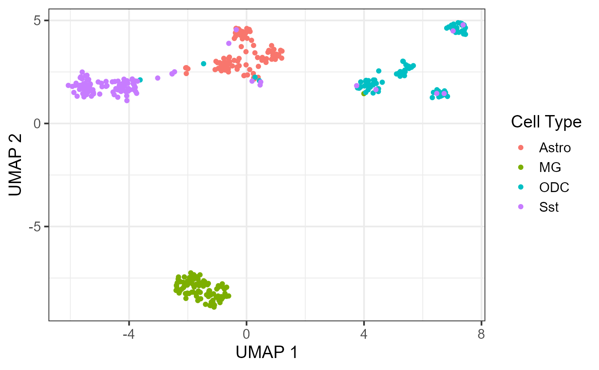
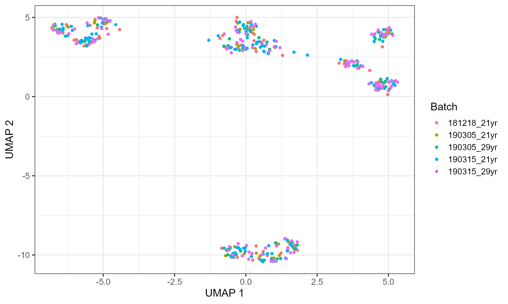

BandNorm-tutorial
BandNorm-tutorial.RmdIntroduction
The advent of single-cell sequencing technologies in profiling 3D genome organization led to development of single-cell high-throughput chromatin conformation (scHi-C) assays. Data from these assays enhance our ability to study dynamic chromatin architecture and the impact of spatial genome interactions on cell regulation at an unprecedented resolution. At the individual cell resolution, heterogeneity driven by the stochastic nature of chromatin fiber, various nuclear processes, and unwanted variation due to sequencing depths and batch effects poses major analytical challenges for inferring single cell-level 3D genome organizations.
To explicitly capture chromatin conformation features and distinguish cells based on their 3D genome organizations, we develop a simple and fast band normalization approach, BandNorm. BandNorm first removes genomic distance bias within a cell, and sequencing depth normalizes between cells. Consequently, BandNorm adds back a common band-dependent contact decay profile for the contact matrices across cells. The former step is achieved by dividing the interaction frequencies of each band within a cell with the cell’s band mean. The latter step is implemented by multiplying each scaled band by the average band mean across cells.

The introduction for BandNorm
Installation
To use BandNorm, the following packages are necessary:
install.packages(c('ggplot2', 'dplyr', 'data.table', 'Rtsne', 'umap'))
if (!requireNamespace("devtools", quietly=TRUE))
install.packages("devtools")
devtools::install_github("immunogenomics/harmony")BandNorm can be installed from Github:
devtools::install_github('sshen82/BandNorm', build_vignettes = TRUE)Also, if the user doesn’t have default R path writing permission, it is possible to install the package to the personal library:
withr::with_libpaths("personalLibraryPath", devtools::install_github("sshen82/BandNorm"))Format of input
There are three possible ways to input the data:
- A path containing all cells in the form of [chr1, binA, chr2, binB, count], the cell looks like below:
chr1 0 chr1 1000000 9
chr1 1000000 chr1 1000000 200
chr1 0 chr1 2000000 2
chr1 1000000 chr1 2000000 4
chr1 2000000 chr1 2000000 220
chr1 1000000 chr1 3000000 1
chr1 2000000 chr1 3000000 11
chr1 3000000 chr1 3000000 197
chr1 1000000 chr1 4000000 1
chr1 2000000 chr1 4000000 2- An R data.frame in the form of [chr1, binA, binB, count, diag, cell_name]. The column names should be c(“chrom”, “binA”, “binB”, “count”, “diag”, “cell”). Below we print the example data.
library(BandNorm)
#> Loading required package: ggplot2
#> Warning: package 'ggplot2' was built under R version 4.0.5
#> Loading required package: dplyr
#> Warning: package 'dplyr' was built under R version 4.0.5
#>
#> Attaching package: 'dplyr'
#> The following objects are masked from 'package:stats':
#>
#> filter, lag
#> The following objects are masked from 'package:base':
#>
#> intersect, setdiff, setequal, union
#> Loading required package: data.table
#> Warning: package 'data.table' was built under R version 4.0.4
#>
#> Attaching package: 'data.table'
#> The following objects are masked from 'package:dplyr':
#>
#> between, first, last
#> Loading required package: Rtsne
#> Warning: package 'Rtsne' was built under R version 4.0.3
#> Loading required package: umap
#> Warning: package 'umap' was built under R version 4.0.3
#> Loading required package: progress
#> Warning: package 'progress' was built under R version 4.0.4
#> Loading required package: harmony
#> Loading required package: Rcpp
#> Warning: package 'Rcpp' was built under R version 4.0.5
#> Loading required package: FreeHiCLite
#> Loading required package: Matrix
#> Warning: package 'Matrix' was built under R version 4.0.5
#> Loading required package: gmodels
#> Warning: package 'gmodels' was built under R version 4.0.4
#> Loading required package: doParallel
#> Warning: package 'doParallel' was built under R version 4.0.3
#> Loading required package: foreach
#> Warning: package 'foreach' was built under R version 4.0.3
#> Loading required package: iterators
#> Warning: package 'iterators' was built under R version 4.0.3
#> Loading required package: parallel
#> Loading required package: matrixStats
#> Warning: package 'matrixStats' was built under R version 4.0.3
#>
#> Attaching package: 'matrixStats'
#> The following object is masked from 'package:dplyr':
#>
#> count
#> Loading required package: Seurat
#> Warning: package 'Seurat' was built under R version 4.0.5
#> Attaching SeuratObject
data(hic_df)
print(hic_df[1:10, ])
#> chrom binA binB count diag cell
#> 1 chr1 0e+00 0e+00 38 0e+00 Astro_1
#> 2 chr1 0e+00 1e+06 1 1e+06 Astro_1
#> 3 chr1 1e+06 1e+06 105 0e+00 Astro_1
#> 4 chr1 1e+06 2e+06 1 1e+06 Astro_1
#> 5 chr1 2e+06 2e+06 116 0e+00 Astro_1
#> 6 chr1 2e+06 3e+06 2 1e+06 Astro_1
#> 7 chr1 3e+06 3e+06 133 0e+00 Astro_1
#> 8 chr1 3e+06 4e+06 1 1e+06 Astro_1
#> 9 chr1 4e+06 4e+06 112 0e+00 Astro_1
#> 10 chr1 3e+06 5e+06 1 2e+06 Astro_1- We also support using Juicer .hic format, and you can use bandnorm_juicer function to run it. We will have a thorough example for this in the future.
For the example dataset, we also have batch information and cell-type information. Note that the cell_name in those external information should be consistent with the hic_df file.
data(batch)
data(cell_type)
print(batch[1:10, ])
#> cell_name batch
#> [1,] "Astro_1" "181218_21yr"
#> [2,] "Astro_2" "181218_21yr"
#> [3,] "Astro_3" "181218_21yr"
#> [4,] "Astro_4" "181218_21yr"
#> [5,] "Astro_5" "181218_21yr"
#> [6,] "Astro_6" "181218_21yr"
#> [7,] "Astro_7" "181218_21yr"
#> [8,] "Astro_8" "181218_21yr"
#> [9,] "Astro_9" "181218_21yr"
#> [10,] "Astro_10" "181218_21yr"
print(cell_type[1:10, ])
#> cell_name cluster
#> [1,] "Astro_1" "Astro"
#> [2,] "Astro_2" "Astro"
#> [3,] "Astro_3" "Astro"
#> [4,] "Astro_4" "Astro"
#> [5,] "Astro_5" "Astro"
#> [6,] "Astro_6" "Astro"
#> [7,] "Astro_7" "Astro"
#> [8,] "Astro_8" "Astro"
#> [9,] "Astro_9" "Astro"
#> [10,] "Astro_10" "Astro"Download existing single-cell Hi-C data
You can also use download_schic function to download real data. The available data includes Kim2020, Li2019, Ramani2017, and Lee2019. You can specify one of the cell-types in those cell lines. There are also summary files available for them, and the summary includes batch, cell-type, depth and sparsity information. You can go to this website for more information.
download_schic("Li2019", cell_type = "2i", cell_path = getwd(), summary_path = getwd())Use BandNorm
We provide a demo scHi-C data named hic_df, sampled 400 cells of Astro, ODC, MG, Sst, four cell types and chromosome 1 from Ecker2019 for test run. After obtaining the hic_df file, you can use the bandnorm function to normalize the data. The result consists of 6 columns: chromosome, binA, binB, diag (which is binB - binA), cell (which is the name of the cell), and BandNorm. You can use the save option to save the normalized file, and if so, you need to give a path for output.
bandnorm_result = bandnorm(hic_df = hic_df, save = FALSE)
bandnorm_result[1:10, ]
#> chrom binA binB diag cell BandNorm
#> 1 chr1 0e+00 0e+00 0e+00 Astro_1 120.131557
#> 2 chr1 0e+00 1e+06 1e+06 Astro_1 8.051104
#> 3 chr1 1e+06 1e+06 0e+00 Astro_1 331.942461
#> 4 chr1 1e+06 2e+06 1e+06 Astro_1 8.051104
#> 5 chr1 2e+06 2e+06 0e+00 Astro_1 366.717385
#> 6 chr1 2e+06 3e+06 1e+06 Astro_1 16.102209
#> 7 chr1 3e+06 3e+06 0e+00 Astro_1 420.460450
#> 8 chr1 3e+06 4e+06 1e+06 Astro_1 8.051104
#> 9 chr1 4e+06 4e+06 0e+00 Astro_1 354.071958
#> 10 chr1 3e+06 5e+06 2e+06 Astro_1 8.392744
# bandnorm_result = bandnorm(hic_df = hic_df, save = TRUE, save_path = getwd())Then, you can use create_embedding function to obtain a PCA embedding for the data. You can choose to use Harmony to remove the batch effect.
embedding = create_embedding(hic_df = bandnorm_result, do_harmony = TRUE, batch = batch)
#> [1] "The number of features is 26330"
#> Harmony 1/10
#> Harmony 2/10
#> Harmony 3/10
#> Harmony 4/10
#> Harmony 5/10
#> Harmony 6/10
#> Harmony 7/10
#> Harmony 8/10
#> Harmony 9/10
#> Harmony converged after 9 iterations
embedding[1:10, ]
#> PC1 PC2 PC3 PC4 PC5 PC6
#> Astro_1 -17.410140 25.494663 -19.480286 34.2690571 -37.1122025 -25.464748
#> Astro_2 9.561101 55.027226 -54.792366 -55.7406411 -14.2623791 3.614309
#> Astro_3 1.683535 9.208540 -1.867107 1.1854228 11.9501638 -25.697850
#> Astro_4 -6.200497 27.988144 -27.294043 6.7155598 -9.9836926 -17.407310
#> Astro_5 3.205684 9.184638 -19.671400 11.4220857 -21.3390385 -19.489509
#> Astro_6 -15.649914 15.356238 -20.622328 -4.7440280 -1.9930015 13.157134
#> Astro_7 -23.536566 21.844362 -10.611313 -1.2447859 -0.3913154 -5.241657
#> Astro_8 -35.818404 30.597797 -13.914001 9.8165486 -19.8764394 -16.117398
#> Astro_9 -13.437842 10.195098 -16.587119 12.6951651 -7.9965350 8.231271
#> Astro_10 -10.784257 5.765060 -13.677581 -0.6267457 -22.5840728 -4.499106
#> PC7 PC8 PC9 PC10 PC11 PC12
#> Astro_1 2.638351 -50.70572513 38.0415231 -2.636112 35.960952 -20.099967
#> Astro_2 -2.377189 2.21201053 17.2342928 10.401020 26.867821 -34.015630
#> Astro_3 -15.126349 22.63693506 -0.4792958 9.134261 10.450195 -6.011320
#> Astro_4 6.399372 2.77994557 -1.2614367 -12.361952 -3.406752 -11.396054
#> Astro_5 2.642024 -1.78732203 37.7057810 17.181958 78.678345 -34.014077
#> Astro_6 -12.425329 -0.52965010 -3.6592940 4.331817 6.492571 -41.650122
#> Astro_7 -3.999190 4.97635786 -8.3065713 -6.000965 -3.622839 -4.035006
#> Astro_8 -9.894281 14.27877609 16.3305854 -34.498939 -4.516919 3.925841
#> Astro_9 15.301209 32.63923507 40.2093633 13.324488 27.958856 -67.649659
#> Astro_10 11.434423 0.03816165 27.4101712 -13.567914 12.613922 -27.898073
#> PC13 PC14 PC15 PC16 PC17 PC18
#> Astro_1 34.893955 -15.1060105 29.3979125 -11.810200 45.0775294 -46.857373
#> Astro_2 2.958462 -0.5706396 -4.5273624 11.125619 -3.3634642 -14.342152
#> Astro_3 15.366001 9.2143969 -0.8872121 15.846444 12.0555174 -4.138300
#> Astro_4 -8.028570 7.7732926 -20.6506159 -5.404709 -0.7584566 5.991618
#> Astro_5 31.885293 43.3238932 -4.4413090 12.608177 -0.2297105 15.885575
#> Astro_6 23.359789 2.7812242 5.0533214 -15.138698 -4.6582773 -7.010287
#> Astro_7 14.123259 1.5707693 -9.9066753 6.465005 6.7825587 -17.416610
#> Astro_8 -4.820231 -33.5827710 2.1352066 -17.713664 11.1849868 -15.364835
#> Astro_9 -26.126305 -29.5169686 22.9350440 31.461582 -12.1708240 -49.017528
#> Astro_10 12.848309 -20.2983928 -11.1296495 2.761635 13.3926611 -19.443327
#> PC19 PC20 PC21 PC22 PC23 PC24
#> Astro_1 48.951127 27.957638 -157.6949008 62.015088 22.845954 -49.453088
#> Astro_2 -1.059895 -4.180835 2.8746169 -5.340805 -2.389381 2.322775
#> Astro_3 34.988615 15.282764 1.0329751 1.875829 -6.054706 -4.717917
#> Astro_4 -9.011515 14.047718 15.7555590 -13.655194 -28.054581 -7.650544
#> Astro_5 113.917753 26.254411 81.3586089 15.482127 117.697578 -98.184054
#> Astro_6 -23.664528 -12.330412 19.1710814 38.481957 -10.453734 17.752131
#> Astro_7 -4.524567 -5.329433 11.2101649 6.540224 -22.047587 -2.479816
#> Astro_8 38.382421 2.743845 -51.0669738 -35.274721 -6.700870 55.521972
#> Astro_9 -92.248368 -51.977983 0.2634312 -53.721783 37.497943 12.935128
#> Astro_10 -7.777228 -17.139724 15.0351499 -31.343462 -6.175282 8.781373
#> PC25 PC26 PC27 PC28 PC29 PC30
#> Astro_1 17.2538885 -72.287672 6.810386 -141.3993517 1.494639 -31.976729
#> Astro_2 -3.9622365 -1.402800 1.480427 -2.2635311 1.855233 10.062486
#> Astro_3 11.2451862 22.094295 -38.189756 15.3222820 32.939979 7.241761
#> Astro_4 -1.4760143 21.880213 18.680734 19.1762489 6.719654 -7.760212
#> Astro_5 41.5705437 67.041285 -54.889418 50.2433915 -48.541976 12.393887
#> Astro_6 1.9500796 13.412457 24.733788 0.4438286 23.001485 7.388517
#> Astro_7 34.5581496 19.601552 16.804349 22.2831742 12.055649 -18.429589
#> Astro_8 -0.7497981 1.273784 -39.499127 39.0829660 2.163528 -33.172134
#> Astro_9 7.5346597 -167.052925 -2.212636 51.9978724 -6.118105 -9.300657
#> Astro_10 -44.8123324 11.880044 10.779472 14.8442184 11.505299 5.232621
#> PC31 PC32 PC33 PC34 PC35 PC36
#> Astro_1 23.306122 -82.8079393 15.2812439 -28.739900 63.698870 -83.338917
#> Astro_2 -3.121833 4.1116351 9.8531243 13.666110 -5.366403 10.447920
#> Astro_3 14.295306 -22.7258385 -75.3443417 -5.857261 -2.276445 -6.442921
#> Astro_4 -22.462174 14.5164710 -7.3727610 18.148981 17.622218 17.921558
#> Astro_5 -18.957273 -0.6550348 -0.2811466 -42.906601 70.503229 23.890799
#> Astro_6 -9.050216 52.2247055 16.9102586 1.246012 14.652903 16.573884
#> Astro_7 -28.829829 -3.8874878 -33.4415256 1.963935 -65.089308 -3.095247
#> Astro_8 13.875232 13.2097018 54.9124768 -32.473082 45.214984 35.717249
#> Astro_9 57.382649 -17.6470662 3.4884289 -5.883856 -57.970842 -17.731259
#> Astro_10 -45.142652 50.3425279 -26.2687010 29.039705 5.767299 20.185158
#> PC37 PC38 PC39 PC40 PC41 PC42
#> Astro_1 17.095536 -18.97547 48.645510 -3.963873 4.010915 3.3030398
#> Astro_2 2.328210 14.95864 5.789421 -4.229922 -8.089407 20.6751440
#> Astro_3 -17.301948 56.22902 -5.240622 -25.672355 13.667848 0.9663274
#> Astro_4 -26.724317 -33.55285 38.178072 8.005306 -44.736131 -20.8443088
#> Astro_5 -8.835019 -36.66229 30.898131 -41.718469 72.439273 7.7929683
#> Astro_6 -13.697482 31.28773 39.210126 44.833999 -6.949211 27.7550894
#> Astro_7 -19.159287 35.28345 -40.999401 13.844191 36.494412 -44.2561786
#> Astro_8 57.491447 -87.71583 19.956565 -30.358534 -12.603914 -19.3265170
#> Astro_9 6.956657 68.39481 -61.688944 27.830581 -13.560071 18.0942706
#> Astro_10 14.626552 -31.15094 -55.377152 -59.835162 -29.636377 19.0574114
#> PC43 PC44 PC45 PC46 PC47 PC48
#> Astro_1 -3.651702 -9.296834 29.159998 8.7385990 -13.462191 19.892593
#> Astro_2 29.755365 -3.416570 -10.772615 -27.3320895 1.656046 -13.365692
#> Astro_3 -1.736975 38.483129 36.828579 14.8858141 56.434199 85.297133
#> Astro_4 28.858403 4.948306 10.161513 56.2709599 44.542867 2.542473
#> Astro_5 -14.225178 6.739684 -14.063304 -13.8848198 -47.162508 2.518002
#> Astro_6 -36.521773 15.460292 -57.600289 12.8257894 -34.252181 17.281463
#> Astro_7 -5.529226 -13.045228 10.246778 -70.0970196 3.745759 21.975879
#> Astro_8 52.655553 26.575209 -40.715868 43.4199206 47.815974 -46.954556
#> Astro_9 -15.585712 -9.745535 29.857023 24.6097641 37.878244 -48.889803
#> Astro_10 29.097879 24.074235 8.361039 0.4917049 -40.867814 -15.969362
#> PC49 PC50
#> Astro_1 44.494862 -16.551337
#> Astro_2 -15.696573 21.731132
#> Astro_3 -1.153426 3.810867
#> Astro_4 36.643503 39.504956
#> Astro_5 -14.444272 1.753575
#> Astro_6 -13.328209 -14.353127
#> Astro_7 2.863665 44.651038
#> Astro_8 18.529651 40.688885
#> Astro_9 40.229183 -11.535861
#> Astro_10 -62.690558 -85.565060Finally, using the embedding, you can use UMAP or tSNE to get a projection of all the cells on the 2D plane. If you have the cell-type information or batch information, it is possible to color them on the plot.
plot_embedding(embedding, "UMAP", cell_info = cell_type, label = "Cell Type")
plot_embedding(embedding, "UMAP", cell_info = batch, label = "Batch")